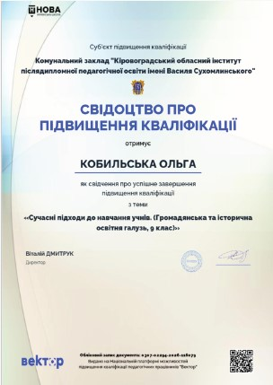
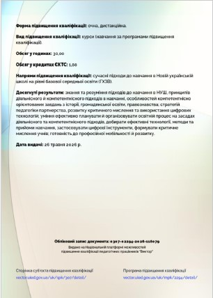
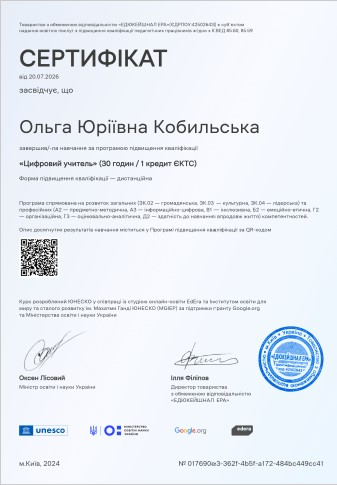
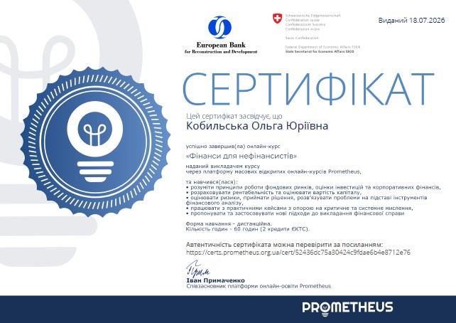
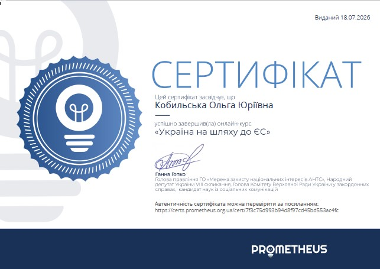
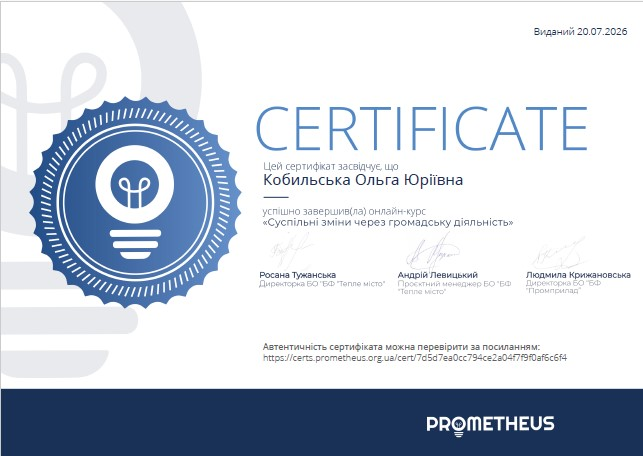
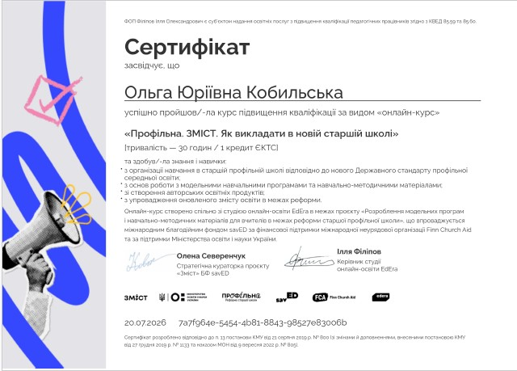
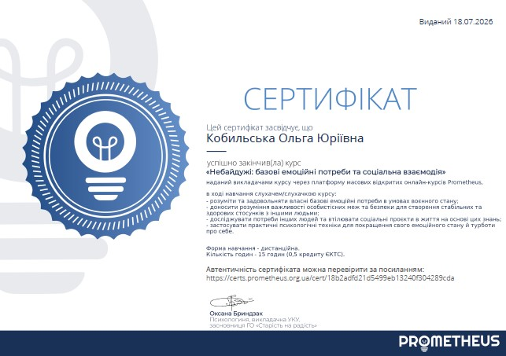
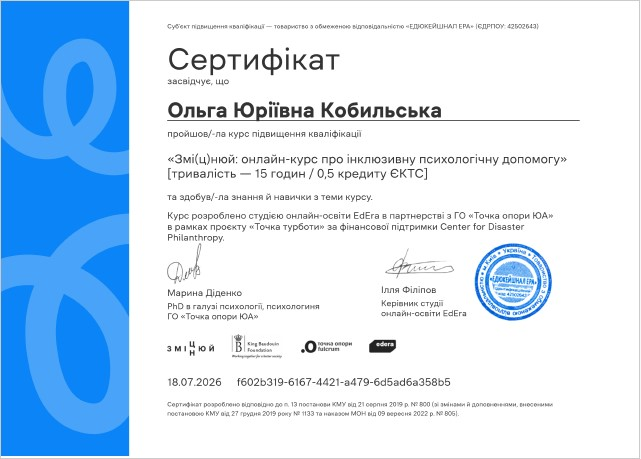
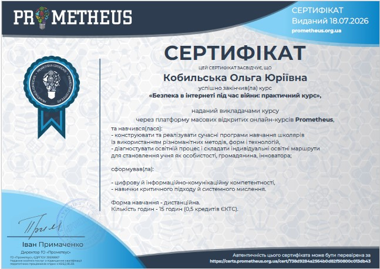

Підвищення кваліфікації
Постійне вдосконалення майстерності — запорука якісної та сучасної освіти
Важливість професійного зростання
Сучасний світ та освітній простір змінюються надзвичайно швидко. Для вчителя навчання впродовж життя (Lifelong Learning) — це не просто нормативна вимога, а внутрішня потреба та професійна філософія.
Постійна участь у курсах, семінарах, вебінарах та тренінгах дозволяє опановувати новітні методики викладання, ефективно інтегрувати цифрові інструменти й штучний інтелект у навчальний процес, розвивати навички інклюзивного навчання та надавати учням актуальні й глибокі знання.
Ключові сертифікати (вертикальний формат)
Основні програми підвищення кваліфікації та тривалі методичні курси (натисніть для збільшення):



Сертифікати за участь у вебінарах, семінарах та тренінгах
Компактний огляд підтверджуючих документів про участь у фахових освітніх заходах:






